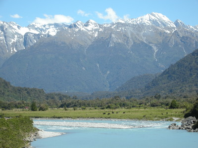
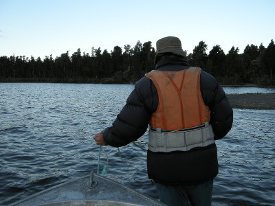

釣行日誌 ＮＺ編 「翡翠、黄金、そして銀塊」
「世界で一番幸せな釣り人」
2010/11/28(SUN)-2
Haast Highway (SH6) を南下して行く途中、氷河から流れ出る水で青白く濁った川を渡る時に、ブリントさんが車を停めてくれた。ここは景色が良いので写真を撮ると良いという話だった。

橋の真ん中まで歩いて行って、流れの向こう、遙か遠くにそびえる雪を頂いた険しい峰々を撮す。
数時間のドライブで、今回の宿泊地である湖畔のロッジに着いた。クリスマスから新年にかけてのハイ・シーズン前なので、駐車場に車は見あたらず、客は僕たちだけのようだった。ブリントさんは、ロッジのオーナーと顔見知りらしく、しばらく歓談した後で、手漕ぎボートを借りる話を付けてくれた。そこで、ロッジの宿泊代は僕が、と言うと彼は、
「お前は今回のゲストだからな」
と言ってくれた。何から何までお世話になりっぱなしだった。
部屋に食料・衣類などの荷物を運び込み、再び釣り支度をして湖に向かう。水辺に張り出したデッキに向かう小径の横に、手漕ぎボートが２艘置いてあった。借りてきたライフベストを着込み、ボートを水辺に運び出し、さぁ、今日の夕まづめは湖の釣りだ。このところ雨が少なかったせいか、湖は大きく減水しており、湖岸の砂利浜が広く露出していた。
デッキから左方向にしばらく漕いだのち、２人は岸に上がった。ボートを浜にずり上げ、ここからは陸っぱりでブラウンを狙って湖岸を静かに歩いて行く。あたりには夕暮れの気配が漂い始めた。
フラックスという細長い葉っぱの植物が密生した岸辺を、５～６歩進んではキャストそしてリトリーブ、これを繰り返して探りを入れてゆく。ブラインドの釣りである。
突然、引っ張っていたグレイゴーストに強い衝撃が加わった。
『ストライク！』
心中で叫んでロッドを立てたが、合わせが弱く、一瞬引き込まれただけで外れてしまった。気を取り直してさらに歩みを進め、小さな沢の入り江にやってきた。沢を遡行し、幅５メートルほどの川幅の岸辺ぎりぎりにストリーマーを投げ込み、クイックイッとアクションを付けて引っ張ってくる。背後から様子を見ていたブリントさんが、
「来た来たっ！でかいぞ！」
と声を上げる。黒い影がフライに近づいたのが見えた瞬間、右手の甲に鋭い痛みを感じた。サンドフライが噛みついたのだ。思わずラインを引くのを止めてしまったので、ブラウンはグレイゴーストを追うのをやめて反転し、どこかへと姿を消してしまった。
「どうした？」
「いやぁ、ちょうどタイミング悪くサンドフライに噛まれちゃって....」
非常に残念だったが、後悔していても始まらないので、ポジティブに次の魚を狙う。しかし、この辺境の地、ウェストランドには、あの悪名高きサンドフライが僕たちの周辺をブンブンと群れなして飛び回っており、とても釣りに集中できない。指出し手袋から露出している指先に集中して噛み噛み攻撃を絶え間なく仕掛けてくるのだ。さっき噛まれた所を掻きむしって釣りを続ける。
沢の流れ込み周辺ではアタリが無く、さらに歩みを進めて大きくカーブした浜辺に出た。岸沿いから徐々に沖目にポイントを広げながらキャストしていると、１メートルほどの水深の所でガクンッと手応えがあった。
「やったぞ！」
それほど大きくは無かったので、落ち着いてファイトし、徐々に岸辺に寄せてくる。ブリントさんが追いついて、ネットですくい上げてくれた。40cm級のブラウンである。この１尾は、今夜の夕食にするべくすかさずキープして、今日の釣りは終了となった。
今来た岸辺を歩いてボートに戻り、再びライフベストを来て乗り込む。しばしブリントさんがロープでボートを引っ張って、浅瀬を乗り越えた。力強く歩む彼の頑健な背中を見ていると、ふと涙がこみ上げてきた。初めて会った1997年以来、フィッシングガイドと客としての関係を越え、良き釣友としていつも僕を暖かく迎えてくれたブリントさん。どうしてこれほど親切にしてくれるのだろう。感謝の言葉も無かった。自分のことは、掛け値無しに、「世界で一番幸せな釣り人」だと思えた。

釣行日誌ＮＺ編 目次へ
サイトマップ
ホームへ
お問い合わせ